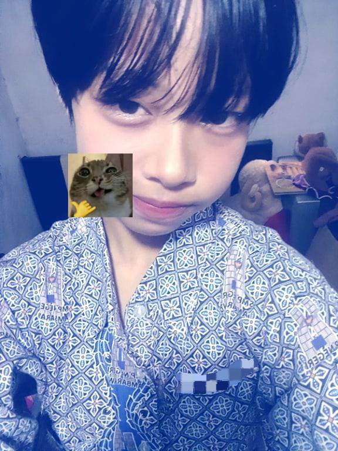

Tya imupppp

Apa aja yang disukai tya?
1. gua humoris
2. stress
3. anomali
4. suka bikin orang bad mood
5. villain
6. absurd
7. imut
8. suka bohong
9. suka kucing
10. suka mie ayam
11. keren
12. suka anime
13. suka femboy
14. ga suka mencoba hal baru
15. sering ketawa sendiri kalau lihat hal lucu walau sedikit
16. suka jokes garing
17. suka tiba tiba nanya
18. lebih milih stiker dari pada emoji
19. coklat selalu di hati
20. suka cake
21. suka rebahan
22. agak jomok(kata tmn gua)
23. suka meme
24. kekanak kanakan
25. suka mainan anak kecil
26. suka merenungi hal kecil
27. jahil
28. suka ngeklaim husbu
29. karbit (dikit)
30. fomo (dikit)
31. membuat orang lain nyaman kalau di dekat gua (agak sering)
32. gampang jealous
33. ga pilih pilih teman
34. lebih suka sederhana
35. suka cari teman
Better call tyaa